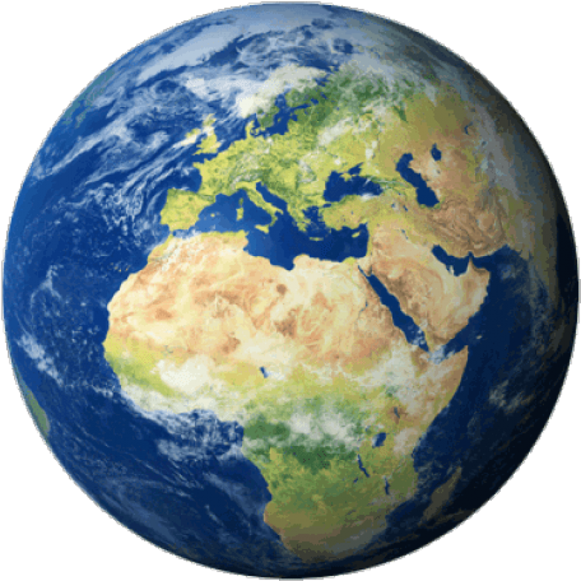
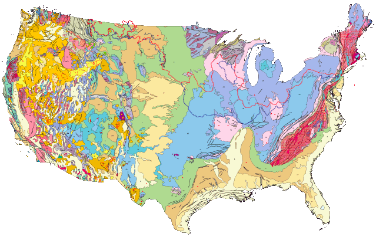
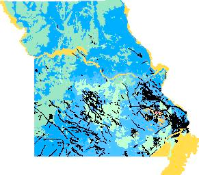
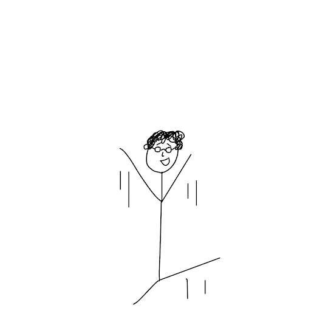
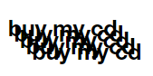

Community Land Trust
(not another)
mickey hayes

What is this?
Autonomous Properties Inc.
an anti-real-estate nonprofit
seeking to foster just and regenerative development
in the immediate and distant futures.
an organic machine
that breathes in the waste of hundreds of years of colonial development
and breathes out possibilities.
a community-oriented project
aimed at solving fundamental problems
by addressing the fundamental resource:
land.
this is the ground floor, so to speak.
Get it?
see...
Community land Trusts are excellent models for land stewardship. They remove property from the speculative real estate market and place it in the hands of local community members. Once a CLT owns land, it never sells.
At the very least, CLT's can ensure that housing units stay affordable forever. Across the country they seek to expand affordable home ownership, thus helping stabilize communities.
…but the possibilities don’t stop there. A CLT can involve itself in any number of wholesome ventures including but not limited to:
- farming/agriculture (urban or rural)
- green systems engineering
- commercial development
- arts and cultural exchange
…all while seeking to foster community organization and strengthen advocacy on a local or regional level.
how hard can it really be?
step one:
incorporate

step two:
fundraise
buy land
it's a product
money good

buy it
"not bad"
it's nice
buy land

step three:
invest
buy land.
*purple rectangles are abandoned properties managed by saint lous' land reutilization authority
step four:
implement
imagination
we are here
decision-making apparatus with bottom-up governing structure
-regenerative cache of community resources
-mixed-vocational collaboration
-heightened capacity for solidarity and mutual aid
-site for critical and constructive dialogue
-a bunch of other fancy good things
in conclusion:
reconciling the causes and effects of these problems must set off an evaluative process within each of us that is antagonistic to this ongoing dehumanization. what can i do? while there may be no single act that will serve as a cure, if each of us engages in this critical and reflective process, we can produce an ecology of answers. the output should be as diverse as the people willing to engage in it, but as mutually reinforcing as their shared convictions.
this process is not static, but it is…
the united states’ 500 year long colonial process has been able to seize land by committing genocide against indigenous peoples and seeking to eradicate their ways of being. the racialized society illegitimately erected on these lands has fought tooth and nail to maintain its status quo of segregation and exploitation of people of color. this prolonged catastrophe has led to numerous challenges that it is incumbent upon each of us to address. before the water gets too high.
a state.
the end.